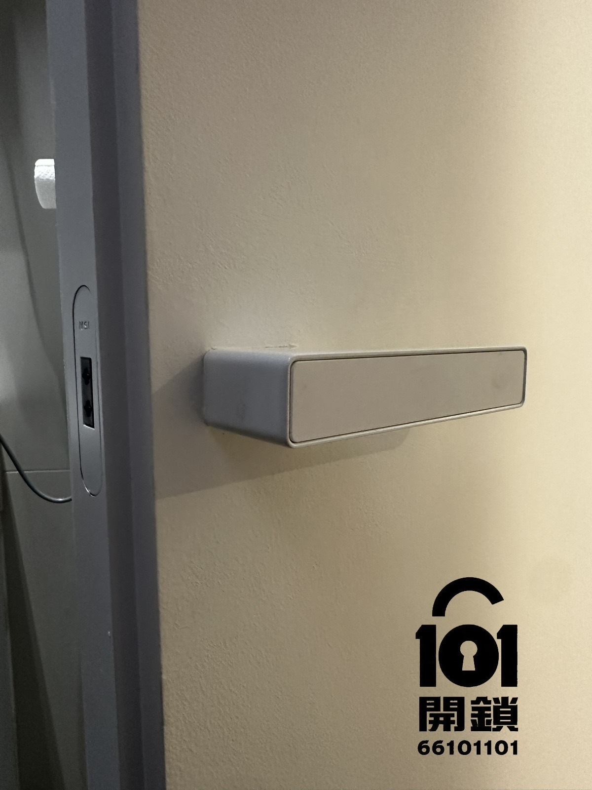
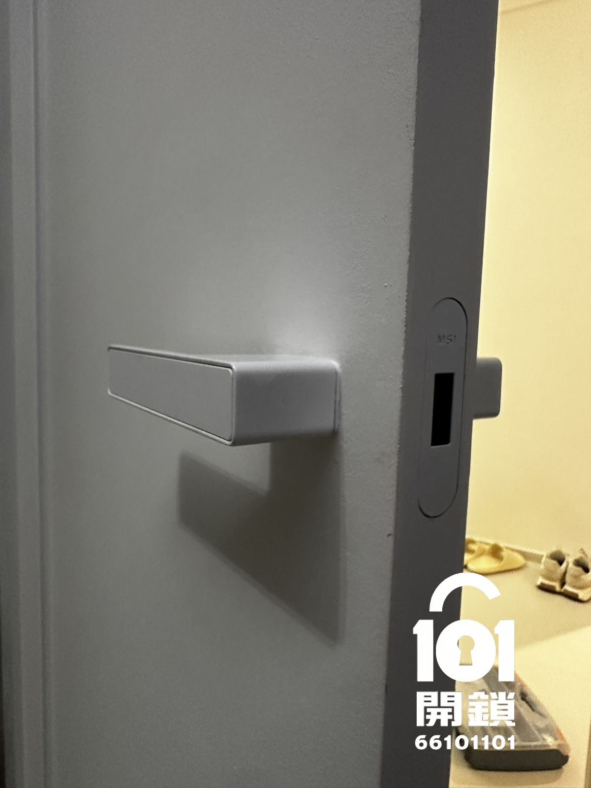

鎖匙放喺廁所內，關門後磁吸鎖自動上鎖

技術開鎖成功，門鎖完好無損，客人取回鎖匙
「師傅手勢好好，完全冇破壞個鎖就開到門，即刻攞返鎖匙！好彩冇強行撬門，全單位門鎖都唔使換，慳返好多錢同時間。101開鎖真係專業，以後有鎖問題一定搵佢哋！」
—— 九龍灣・張先生 五星真實好評
WhatsApp對話截圖及Google評價同步分享📸 客戶WhatsApp好評截圖：「技術開鎖冇破壞，即刻攞返鎖匙」
專業建議：如果唔小心將鎖匙留喺廁所內而門鎖上咗，千祈唔好自己撬門或暴力拉開。應即時聯絡專業鎖匠，101開鎖可提供技術開鎖，唔破壞門鎖，幫你安全取回鎖匙，確保門鎖完好無損。
無論你嘅磁吸鎖係鎖匙留喺房內、鎖芯卡死或者門鎖故障，101開鎖師傅精通各類磁吸鎖技術，保證不破壞門鎖，技術開鎖後門鎖可正常使用，全單位門鎖唔使更換。收費透明，九龍灣、觀塘、全港各區即日可派師傅。